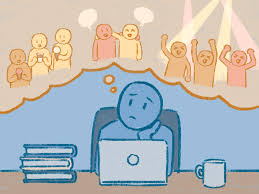

FOMO

Source: https://dailybruin.com/2023/06/10/the-quad-bruins-discuss-navigating-fomo-amid-rise-of-social-media
Have you ever felt a sharp poke of worry when you see your friends posting photos from a party you didn't attend? That restless feeling, the need to grab your phone and scroll just to make sure you aren't being left behind, is known as FOMO, or the Fear of Missing Out. While it feels like a personal habit, it is actually a powerful cycle triggered by the apps we use every day. By understanding how this "digital itch" works, we can stop letting our screens control our moods and start enjoying the real world right in front of us.
FOMO is a type of social anxiety where you feel worried that others are having rewarding experiences without you. It is a global phenomenon that affects millions of people, especially young adults and teens who value social validation. This feeling is often driven by the "Need to Belong," which is a natural human desire to stay connected to others to avoid loneliness. On social media, this need is exploited by "Self-Comparison", where users look at the perfect, filtered lives of others and feel like their own lives do not measure up. This pressure can lead to risky behaviors just to capture a photo that will impress others and boost self-esteem.
Beyond our natural instincts, social media apps are designed with specific features that keep us trapped in this state of anxiety. For example, "Snapchat Streaks" and "Disappearing Posts" create a sense of urgency, making users feel they must stay online or lose their progress and connections. "Tagging" also plays a role, as the fear of being mentioned in a negative way or missing a group discussion drives people to check their phones constantly. These features ensure that social media stays a high priority, often leading to "Phubbing", which is when you snub people in real life to look at your notifications.
To understand how this becomes a habit, we can look at the FOMO Vicious Cycle:
- Anxiety: You feel a sense of worry or apprehension that you are missing out on a rewarding event.
- Checking: This anxiety pushes you to check your social media apps more frequently to stay "in the loop."
- Awareness: By checking more often, you see even more events and fun times that you were not invited to.
- Increased Anxiety: Seeing these missed events makes you feel even more left out, which restarts the cycle with even more intensity.
This cycle is fueled by several key factors that make it difficult to put the phone down. These include:
- The Need to Belong: The deep desire to form attachments and avoid feeling lonely.
- Self-Comparison: Constantly measuring your lifestyle and appearance against your peers.
- Social Standing: The belief that your social rank is delicate and can be destroyed by one missed post.
- App Features: Tools like streaks, disappearing content, and real-time alerts that create pressure to stay active.
- Lack of Contentment: A lack of self-confidence in real-life situations makes the digital world feel more important.
When users are trapped in this cycle, they are often haunted by specific fears. Social media users are often afraid of missing:
- Opportunities to meet up with friends.
- Friends having more rewarding experiences than them.
- Being left out of inside jokes.
- Being "out of the loop" during vacations or big events.
- Others losing interest in them.
- Important posts or messages because there are too many notifications.
- Others feeling let down or ignored if they do not respond immediately.
- Being left out of discussions about social media posts.
- Missing live chats or requests.
- Losing influence, popularity, or status.
The effects of staying in this cycle are serious and go beyond just feeling tired. People who experience high levels of FOMO often deal with a decline in productivity, sleep disturbances, and physical symptoms like tension or restlessness. It can even lead to social media addiction, where the brain’s reward centers are triggered in the same way as substance abuse. To break free, it is important to focus on building healthy offline relationships and hobbies. By increasing your satisfaction with the real world, you can reduce the power that FOMO has over your life and regain your mental peace.
References
- Social Media Victims Law Center. (2026). Social Media and FOMO. Retrieved from https://socialmediavictims.org/mental-health/fomo/
- Elsayed, H. A. E. (2025). Fear of Missing Out and its impact: exploring relationships with social media use, psychological well-being, and academic performance among university students. Frontiers in Psychology, 16, 1582572. https://doi.org/10.3389/fpsyg.2025.1582572